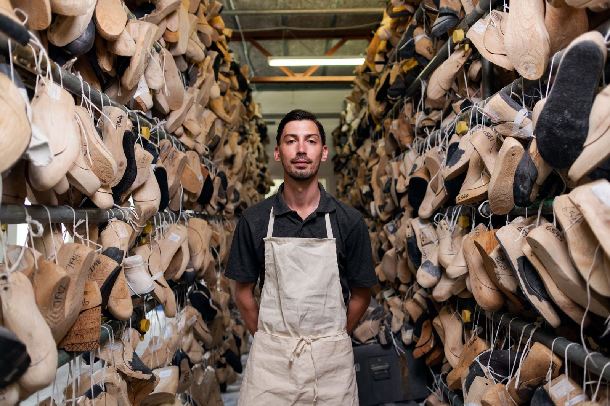
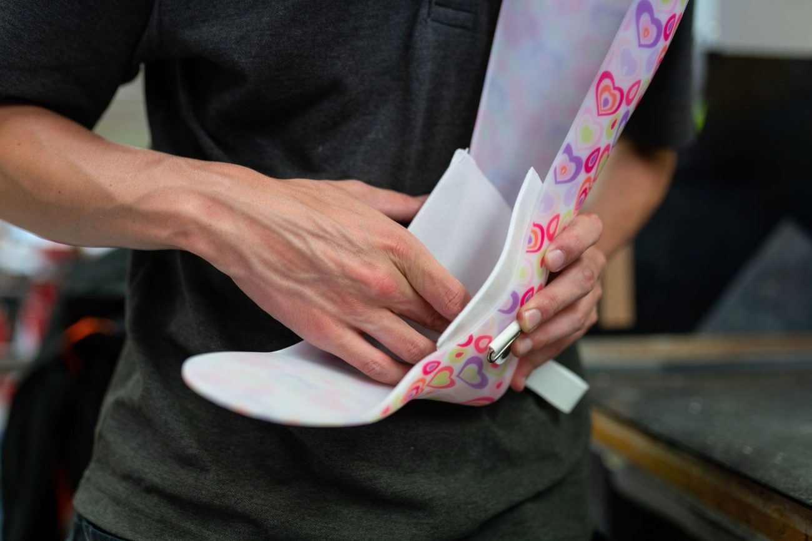
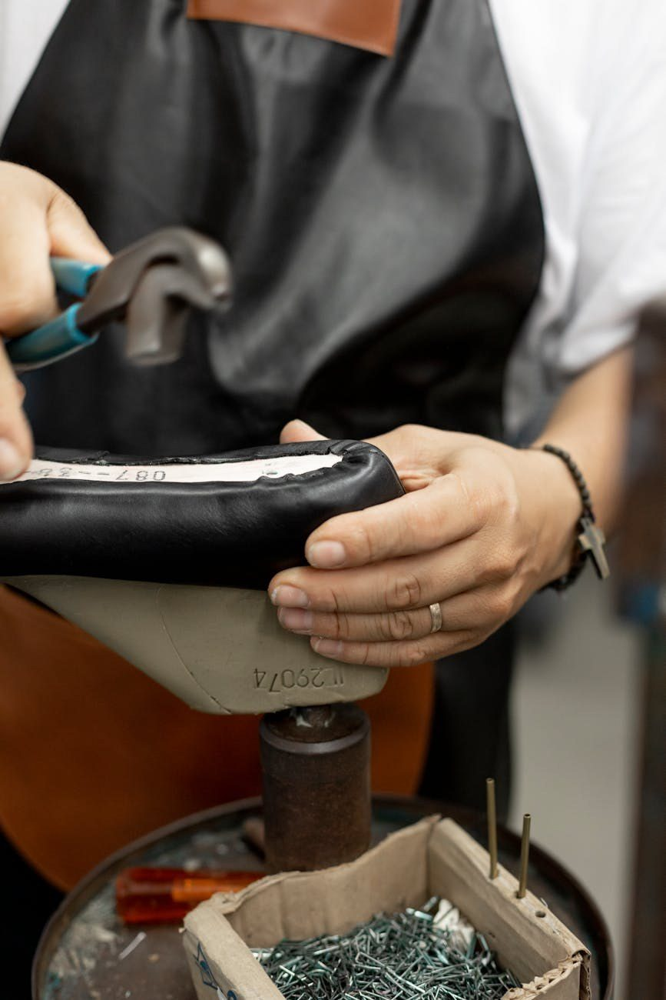

Orthopädietechnik
Individuelle orthopädische Versorgungen — angepasst an Ihr Beschwerdebild, gefertigt mit Präzision.
Orthopädietechnik · Schuhtechnik · Sanitätshaus · Gifhorn
Orthopädische Versorgungen, gemessen statt geschätzt. Vom ersten Schritt auf der Fußdruckplatte bis zur Einlage, die genau zu Ihnen passt — mit der Sorgfalt eines Handwerks am Menschen.
Termin vereinbaren
„Hier finden Sie das Wichtigste über unser Unternehmen und unsere Leistungen."
Individuelle orthopädische Versorgungen — angepasst an Ihr Beschwerdebild, gefertigt mit Präzision.
Schuhzurichtungen und Änderungen am Konfektionsschuh — fachgerecht ausgeführt in der eigenen Werkstatt.
Bandagen und Hilfsmittel für den Alltag — kompetent beraten, sorgfältig ausgewählt.
„Versorgung beginnt mit Messen, nicht mit Vermuten."
Auf der Messplatte wird sichtbar, was im Schuh verborgen bleibt: wo der Fuß belastet, wie er abrollt, wo Entlastung nötig ist. Diese Daten sind die Grundlage jeder Einlage, die wir für Sie fertigen.
„Eine Einlage ist gut, wenn man sie vergisst."

Nach Fußdruckmessung individuell gefertigt — für Alltag, Beruf und Sport. Stützend, bettend oder korrigierend, je nach Befund.
Absatzerhöhungen, Abrollhilfen, Pufferabsätze und weitere Zurichtungen am Konfektionsschuh — fachgerecht in der eigenen Werkstatt ausgeführt.
Wir nehmen uns Zeit: Befund, Messung, Anprobe und Nachkontrolle gehören für uns zusammen.
„Hilfsmittel sollen tragen — nicht auffallen."
Stabilisierung und Entlastung für Knie, Sprunggelenk, Hand und Rücken — passgenau ausgewählt und angepasst.
Hilfsmittel, die den Alltag leichter machen — wir beraten, was wirklich passt.
Mit Verordnung Ihres Arztes übernehmen wir die Versorgung und die Abwicklung mit Ihrer Krankenkasse. Sprechen Sie uns an.
Wir sind ein Sanitätshaus in Gifhorn, das Versorgung als Handwerk am Menschen versteht — sorgfältig gemessen, geduldig angepasst, ehrlich beraten.
ORTHOTEC Gifhorn

Besuchen Sie uns
Celler Str. 50
38518 Gifhorn